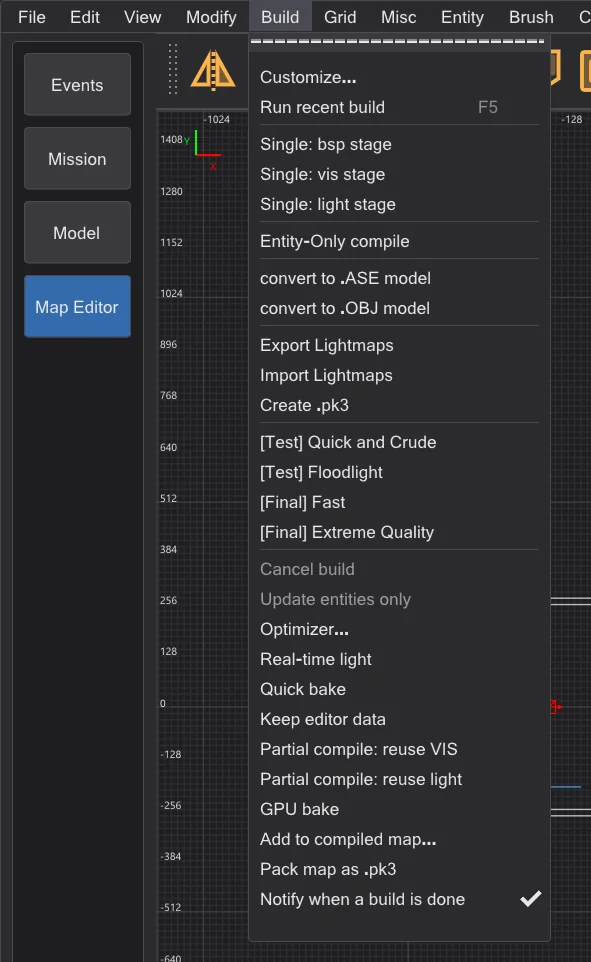
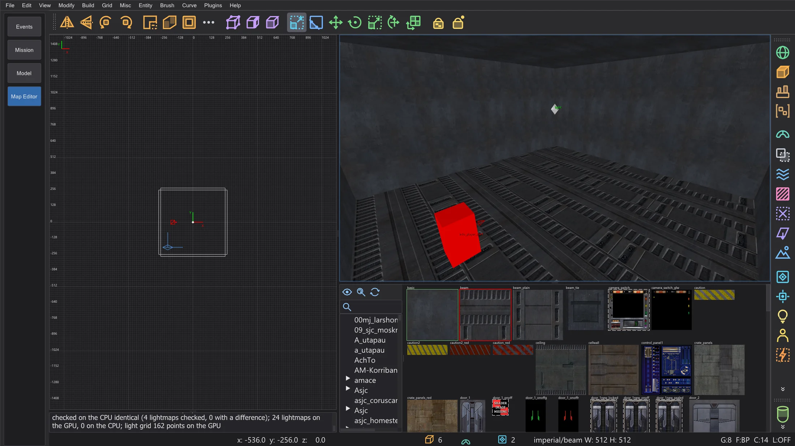

Map editor: GPU bake
Compute the whole light of a map on the graphics card - lightmaps, bounce and light grid - byte for byte the same as on the CPU, and much faster on big maps.
Build > GPU bake (not in NetRadiant-Custom) decides where bhed_q3map2 computes the light of every -light step: Auto (the faster one, bit-identical) (the default), On (graphics card) (switch -bhedgpubake) or Off (processor). The compiled map is the same, byte for byte - the graphics card is only faster. The choice is kept (setting BhedGpuBakeMode).
Auto (the faster one, bit-identical) takes the graphics card only when its result is bit-identical (it computes with double precision) and it is expected to be faster: large maps and bounce rounds. Small maps, and -samples 4 on large maps, stay on the processor; a graphics card without double precision is never chosen. It also remembers, per map and light switches, how long the last processor run and the last graphics card run took, and from then on takes the faster one (also for the quick bake). The console names the choice and the reason, for example "GPU bake (Auto): processor - little light work (34490 super luxels)".

While the map builds, the build progress window and the status line name the graphics card. After the build the console shows the deviation report: every 64th lightmap is computed a second time on the CPU and compared luxel by luxel. The last report is also in the tooltip of GPU bake. The quick bake of the real-time light (Map editor: speed and real-time light) uses the graphics card too when the entry is on.

What runs on the graphics card#
- Lightmaps: for every luxel the contribution of every light with its shadow ray, the style check, the adaptive supersampling of
-samples(also several levels), the filter of-filterand adding the lights in their order. - Bounce (
-bounce): every round, with the surface lights the radiosity creates. - Light grid (the light for models and players): every grid point with all lights.
- On the processor as always: loading, the light lists, vertex light, creating the bounce lights, stitching, storing and writing the .bsp - and everything the graphics card cannot do exactly (see below).
Why the result is the same#
Graphics cards usually compute a little differently from the processor - that is why GPU lightmappers elsewhere give slightly different light. bhed_q3map2 does the same calculations in the same order as q3map2 on the processor:
- every operation is rounded exactly like on the processor (no fused multiply-add); divisions are rounded exactly in integer arithmetic;
- q3map2 normalizes vectors and takes square roots in double precision; the graphics card decides the same rounded result with extra-precise float arithmetic and, in the rare close cases, in double precision;
- the shadow rays walk q3map2's own trace tree with its tolerances, and the supersampling follows the same order of stamps as the processor;
- nothing is summed up in the order threads happen to finish - every luxel adds its lights in list order.
Whatever the graphics card cannot compute exactly - alpha shadows and light filters (they need the texture), a value outside the safe range, a result that is not finite - is computed for that lightmap (or grid point) on the processor. If the graphics card fails or is reset by Windows during the build, the processor computes the rest. A lightmap too big for the graphics memory is computed in parts of its light list.
How much faster#
Measured on a notebook with an Intel i9-14900HX (32 threads) and an NVIDIA RTX 4070 Laptop GPU, the whole -light step (median of three runs). The processor uses all 32 threads; the GPU bake still needs the processor for the parts listed above, so the gain is largest on big maps with many lights and bounce rounds.
| Map | Switches | Processor | Graphics card | Same luxels |
|---|---|---|---|---|
| mp__duel1 | -fast -patchshadows -samples 2 -filter -bounce 8 | 1.8 s | 1.2 s | 100 % |
| mp__duel1 | -fast -patchshadows -samples 2 -filter | 0.4 s | 0.4 s | 100 % |
| mp__duel1 | -fast -patchshadows -samples 4 -filter -bounce 2 | 1.1 s | 0.8 s | 100 % |
| md_ch_ben | -fast -patchshadows -samples 2 -filter -bounce 8 | 2.5 s | 2.2 s | 100 % |
| md_ch_ben | -fast -patchshadows -samples 2 -filter | 1.7 s | 1.6 s | 100 % |
| md_ch_ben | -fast -patchshadows -samples 4 -filter -bounce 2 | 2.3 s | 2.1 s | 100 % |
| kejim_post | -fast -filter -super 2 | 8.5 s | 6.2 s | 100 % |
| kejim_post | -fast -filter -super 2 -bounce 2 | 48.8 s | 20.0 s | 100 % |
| kejim_post | -fast -filter -super 2 -samples 3 | 9.0 s | 7.3 s | 100 % |
| md_am_sith | -fast -patchshadows -samples 2 -filter -bounce 8 | 62.0 s | 31.3 s | 100 % |
| md_am_sith | -fast -patchshadows -samples 2 -filter | 31.7 s | 12.1 s | 100 % |
| md_am_sith | -fast -patchshadows -samples 4 -filter -bounce 2 | 52.9 s | 28.0 s | 100 % |
| duel_mygeeto | -fast -patchshadows -samples 2 -filter -bounce 8 | 74.3 s | 47.1 s | 100 % |
| duel_mygeeto | -fast -patchshadows -samples 2 -filter | 31.6 s | 16.6 s | 100 % |
| duel_mygeeto | -fast -patchshadows -samples 4 -filter -bounce 2 | 67.2 s | 101.3 s | 100 % |
-samples 4 (101 s against 67 s) - the deep supersampling at many shadow edges branches differently for every luxel, and graphics cards are slow at that. With -samples 2 (the Build menu) every map measured was as fast or faster.For the command line#
-bhedgpubake- the light on the graphics card (with-light).-bhedgpubakeauto- the faster of processor and graphics card, the graphics card only bit-identical;-bhedgpubakezeiten <cpu ms> <gpu ms>gives the measured times of the last runs (0 = unknown).-bhedgpubakecheck N- every N-th lightmap is computed on the CPU too (default 64, up to one million pairs of light and luxel;1checks all,0none). The report is also written to<map>.bhedgpu.txt.-bhedgpuadapter Nor a part of the name - which graphics card (otherwise the fastest).
-bhedgpudxr with -bhedgpu): it traces the shadow rays about twice as fast, but without q3map2's tolerances it misses about 0.15 % of the hits and cannot see the solid parts of the trace tree - and the shadow rays are only 7-8 % of the time of a GPU bake. It is therefore not used for baking.